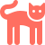
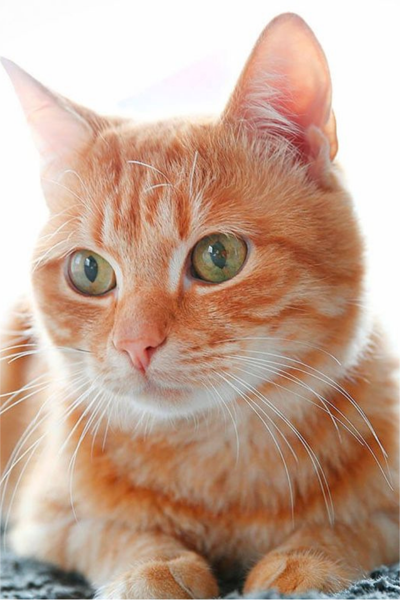
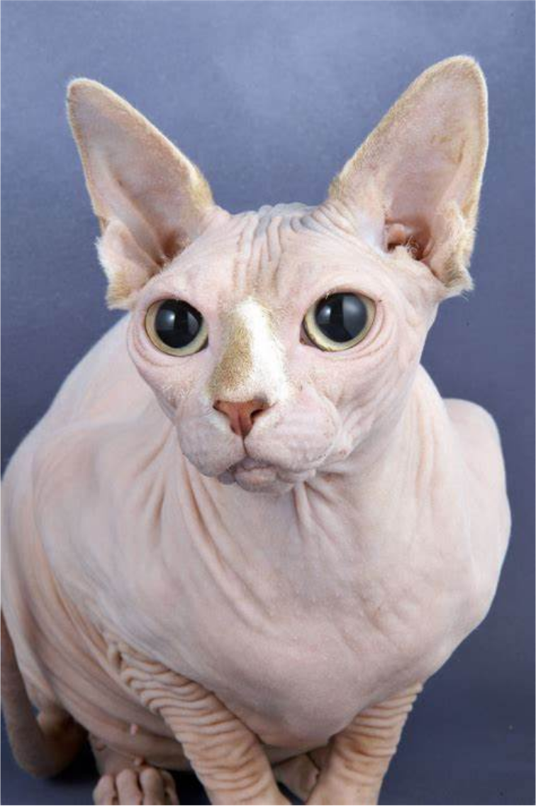
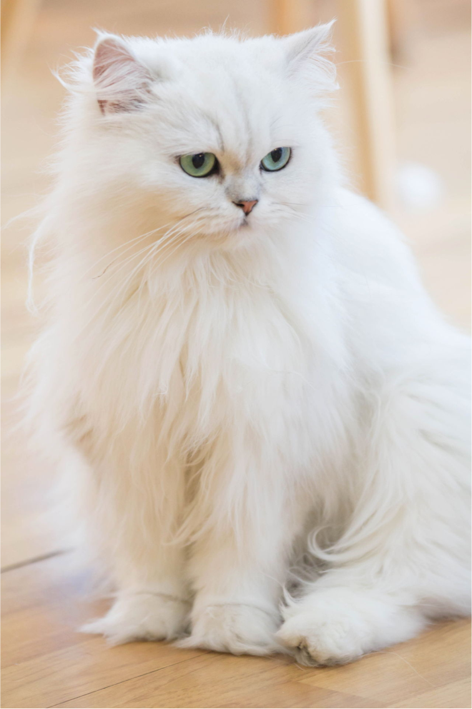
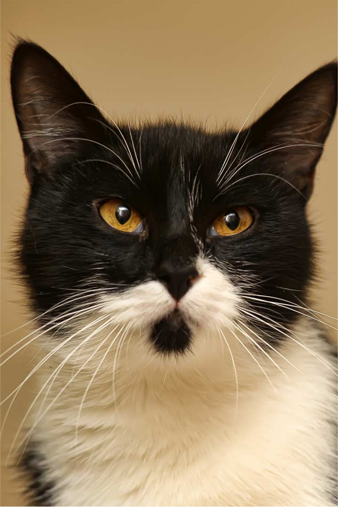

 THE CATWALK: 6 BREEDS OF FELINE ELEGANCE

Tabby
Tabby cat is known for its distinctive striped or spotted coat.

Siamese
Siamese is famous for its sleek body and striking blue eyes.

Ginger
Ginger cat often sports a vibrant orange coat with a warm, friendly demeanor.

Syphnx
Sphynx cat stands out with its hairless body and large ears.

Persian
Persian cat is recognized for its luxurious long fur and flat face.

Tuxedo
Tuxedo cat boasts a dapper black and white coat that resembles a formal suit.
 Click Me Meow!
Click Me Meow!